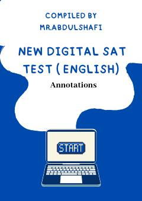

SDSAT raqamli imtihonining 6-amaliy testi uchun o'quv qo'llanma va tushuntirishlar.
Ushbu qo'llanma SAT imtihonining raqamli formatdagi 6-amaliy testining 1-moduli uchun savollar va tushuntirishlarni o'z ichiga oladi. Unda o'qish va yozish qobiliyatlarini baholashga qaratilgan turli xil matnli topshiriqlar va ularning tahlili keltirilgan.